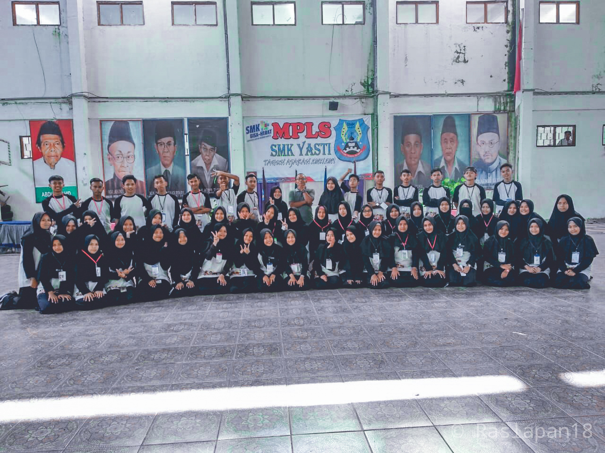
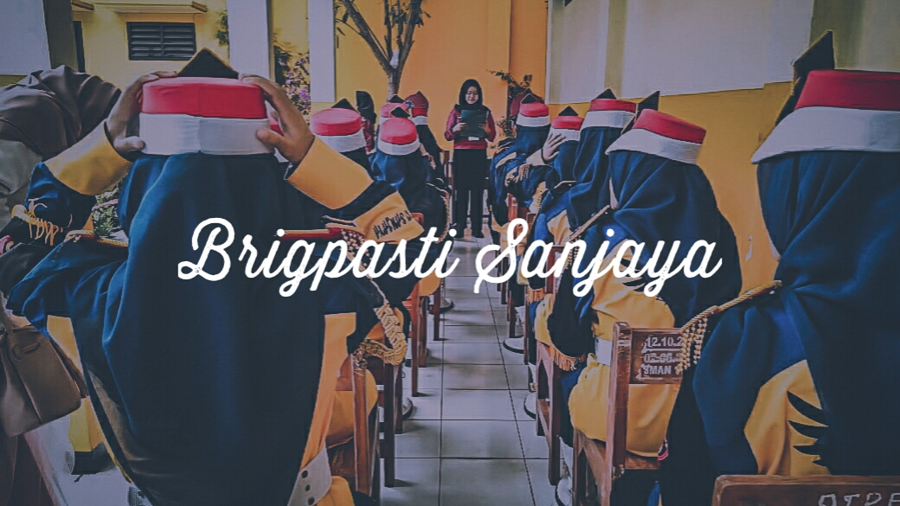
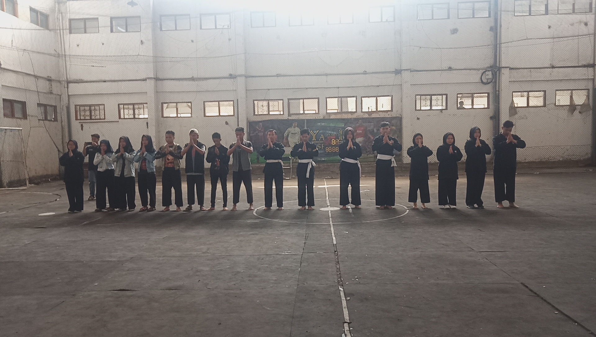
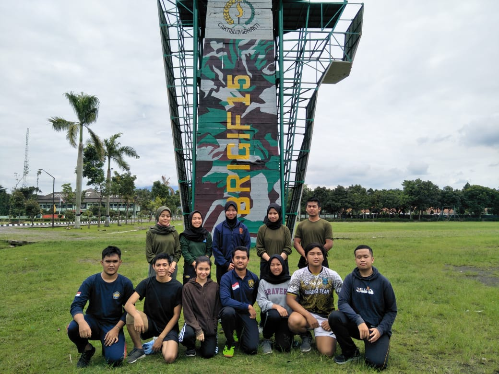

Rahman Ramadan
Namaku Rahman Ramadan, aku seorang mahasiswa Teknik Informatika Universitas Pasundan. Aku memilih Informatika
karena menyadari ada ketertarikan pada bidang web, hal yang aku minati selama perkuliahan yaitu Front End,
mungkin karena aku masih semester 2 kali ya hehe.. yang baru dipelajari di semester 2 kurang lebih membahas
seputar
dasar pemrograman web.
Aku ingin menjadi mahasiswa yang aktif oleh karena itu aku ikut UKM Resimen Mahasiswa. Resimen Mahasiswa
(Menwa) adalah salah satu di antara sejumlah kekuatan sipil untuk mempertahankan negeri. Ia lahir di perguruan
tinggi sebagai perwujudan Sistem Pertahanan dan Keamanan Rakyat Semesta (Sishankamrata), beranggotakan
mahasiswa yang merasa terpanggil untuk membela negeri. Anggota Menwa (wira) di setiap kampus membentuk suat
satuan. Sebagai salah satu unit kegiatan kemahasiswaan, komandan satuan melapor langsung kepada rektor /
pimpinan perguruan tinggi.
Semester 3 nanti aku punya planning untuk bisa bergabung bersama Himpunan Mahasiswa. Tujuanku ingin
menjadi mahasiswa yang aktif karena lingkungan perkuliah merupakan kesempatan sebagian orang untuk bisa
mengembangkan serta meningkatkan pengetahuan dan interpersonalskill bagi setiap orang yang berkesempatan
melanjutakan pendidikan di perkuliahan. Jadi fokusku sekarang sampai dengan kedepan adalah meyakinkan diriku
untuk selalu semangat belajar dalam hal apapun, konsisten, mencintai waktu yang sedang dan akan berjalan, dan
mencintai diri sendiri :).
Journey of Life
Cerita ini dimulai dari SMK, aku menjadi anggota osis, mengikuti eskul paskibra, dan juga pencak silat.
Menjadi anggota osis membuatku lebih berani tampil dihadapan umum. Mengikuti pencak silat dan paskibra
merupakan pilihanku untuk lebih terampil, aktif, dan disiplin dalam segala hal. Dan ukm resimen mahasiswa
menjadi langkah baruku dalam mengembangakn dan meningakatkan kulitas kepribadianku.
Osis

Banyak yang aku dapati di Organisasi Siswa Intra Sekolah. Dari berani mengemukakan argumen, kerja tim,
manajemen waktu, menghargai pendapat semua orang, dan berfikir kreatif. Osis SMK Yasti Luar Biasa!!
Paskibra

Cita-citaku masuk paskibra karena ingin mengikuti perlombaanya, namun siapa kira ternyata didikan pelatih
sangat membekas dan membuat mental anggota paskibra bertambah kuat. Dari hasil perjuangan kami, tahun lalu
kami semua terlipih menjadi bagian Pasukan Pengibar Bendera untuk wilayah Kecamatan Cisaat.
Pencak Silat

Silat merupakan Bela Diri yang aku pilih sejak aku kelas 6 SD kurang lebih umur 12 tahun. Karena aku orang
yang aktif dan mudah untuk memahami segala jurus yang disampaikan pelatih akhirnya terpilihlah untuk
mengikuti beberapa perlombaan. Juara 3 Kabupaten itulah terakhir kali aku mengikuti bela diri pencak silat.
Resimen Mahasiswa

Dan sekarang Resimen Mahasiswa menjadi bagian jati diriku. Yang aku cari tidak lain dan tidak bukan yaitu
untuk perbaikan
diriku, dari segi fisik, mental, tekad, dan banyak hal. widya castrena dharma siddha